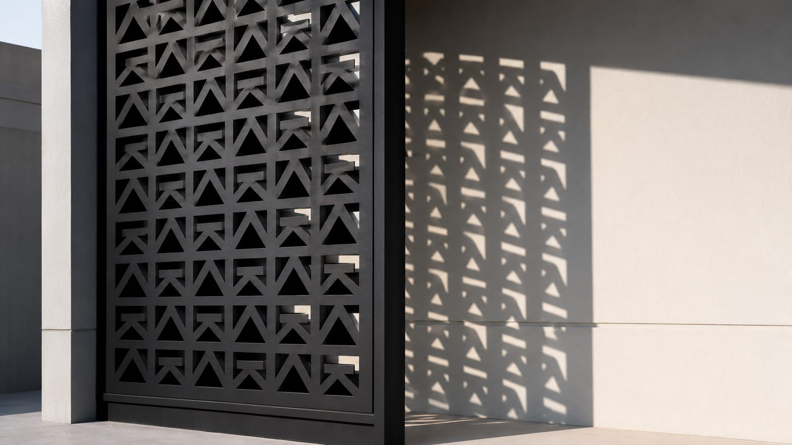
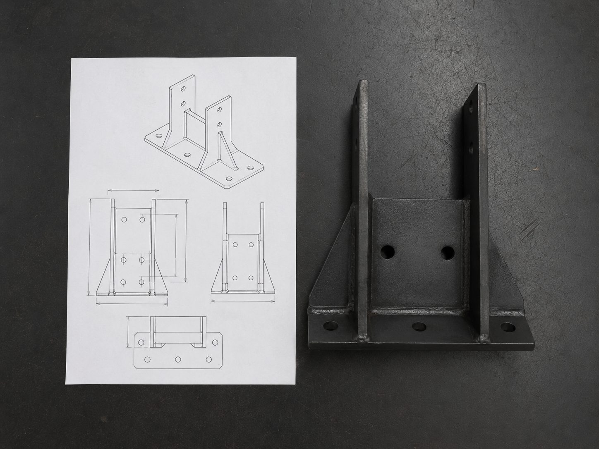
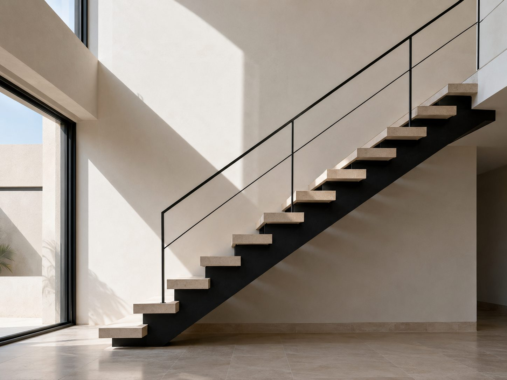

Services · Custom Fabrication
From drawing to installed
Privacy screens, laser-cut panels, staircases, planters and one-off architectural pieces — built to the drawing, or developed from an idea.

3 mm perforatedWhat we make
Typical commissions
Privacy Screens
Perforated and laser-cut panels for terraces, courtyards and boundary infill.
Decorative Panels
Feature walls, façade cladding, signage backers and interior partitions.
Staircases
Straight, spiral and floating stairs with structural stringers and treads.
One-Off Pieces
Planters, furniture frames, pool features, gates that aren't gates.
For architects and designers
We'll flag it before we build it
We fabricate to supplied drawings and produce shop drawings for approval. Where a detail won't build, won't hold tolerance, or will trap water, we raise it during drawing review — not after production.
That includes honest feedback on perforation ratio versus panel rigidity, fixing strategy for large spans, thermal movement across long runs, and whether a finish will survive its intended position.
Material and finish samples are available before commitment on bespoke pieces.

Shop drawing rev. C
Tread 280 mmStarting from an idea
No drawing? Start with the function
Most custom work begins as a problem, not a design — overlooked terrace, awkward level change, a blank wall that needs to do something.
Tell us what the piece has to achieve and where it sits. We'll come back with an approach, an indicative cost band, and what the decisions actually hinge on. Design follows function; the pattern is the last thing we choose, not the first.
Send the drawing, or the problem.
Either works. We'll tell you what's buildable and what it should cost before anyone commits.
Discuss a Piece →